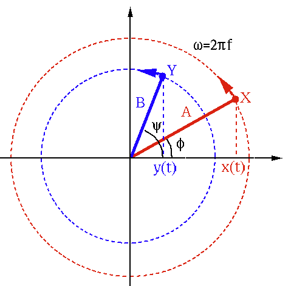
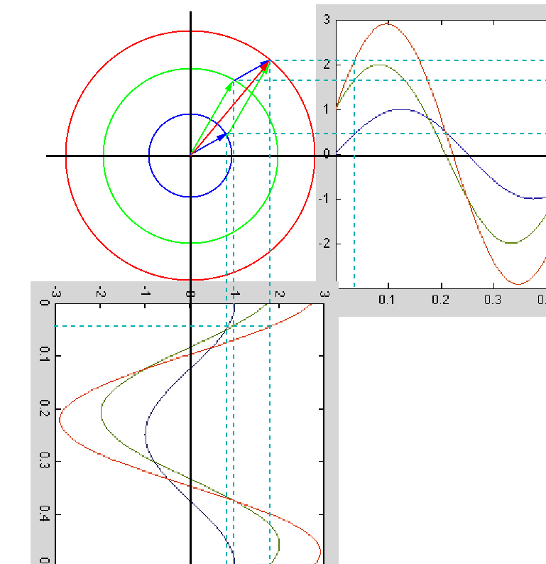
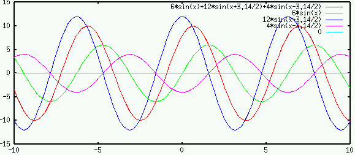
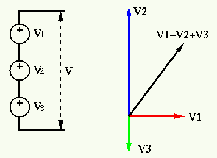
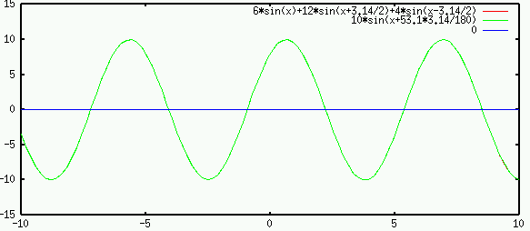
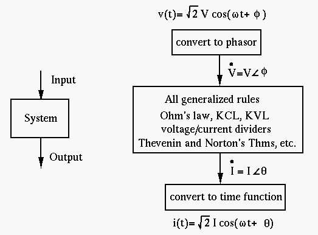
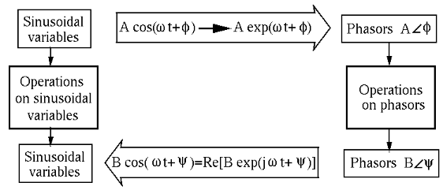

Next: Impedance and Generalized Ohm's Up: Chapter 3: AC Circuit Previous: Sinusoidal Functions
In the following discussion about AC circuit analysis, all sinusoidal variables (currents and voltages) are assumed to be of the same frequency. In general, arithmetic operations of sinusoidal functions are not convenient as they will involve using trigonometric identities. For example, try the following addition of two sinusoidal signals of the same frequency:
| (16) |
However, we can consider such sinusoidal functions as real (or imaginary) parts of some rotating vectors in the complex plane, and their arithmetic operations (addition, multiplication, etc.) can be more conveniently carried out based on phasor representations of the sinusoidal variables.

The sum of the two sinusoidal function can now be found as the real part of
the rotating vector sum:
 |
|||
|
(17) |

Specifically, consider two sinusoidal functions
| (18) |
| (19) |
On the other hand, given such a phasor representation, we can get the real sinusoidal function back by first multiplying and then taking the real part:
| (20) |
 ,
,
 or
or  ) if no confusion will be caused. Sometimes the RMS value
, instead of the peak value
) if no confusion will be caused. Sometimes the RMS value
, instead of the peak value  , is used in phasor.
, is used in phasor.
Example
Consider three sinusoidal voltage sources , and in series. According to the KVL, the overall voltage will be the algebraic sum of the three:
| (21) |

While the addition of these sinusoidal functions is not easy to carry out
(still remember all the trigonometric identities?), it is quite straight
forward to find the vector sum if the voltages are represented as phasors:
 |
|
||
|
(22) |


Phasor and the Fourier transform
A sinusoidal function
can be expressed in
either Fourier transform (Fourier series) or phasor representation:
|
(phasor) | ||
|
(Fourier coefficients) | (23) |
 |
(24) |
Generalized Ohm's law and Kirchhoff's Laws
In general, all methods such as Ohm's law and Kirchhoff's Laws used for DC
circuits composed of resistors can be generalized to AC circuits composed
of capacitors, inductors, as well as resistors, all represented by their
impedances. Also, if we assume all voltages and currents in a circuit are
sinusoids of same frequency  , they can be represented as complex
phasors.
, they can be represented as complex
phasors.
The Ohm's law can be generalized to become:
| (25) |
Solving AC circuit by phasor method
If only the steady state solutions of the DE describing an AC circuit is of interest, the phasor method can be used to solve the problem algebraically without solving the DEs. Specifically, all sinusoidal variables are represented as phasors in terms of their amplitudes and phases, and all components in the circuit (L and C, as well as R) are represented by their impedances, so that all the laws (Ohm's law, KCL and KVL, current and voltage dividers, parallel and series combinations of components) and methods (loop current and node voltage methods, Thevenin's and Norton's theorems, etc.) discussed for DC circuit can be applied.

Operations on sinusoidal variables based on the trigonometric identities are in general lengthy and tedious. The phasor method can convert such sinusoidal variables to vectors in complex plane and thereby simplify the operations.
The phasor represents the amplitude (effective or RMS value) and phase of a sinusoidal function, but leaves out its frequency as it is known to be the same for all sinusoidal variables in the system.
Specifically here are the three steps of the phasor method for arithmetic operation of two sinusoidal functions and of the same frequency:
| (26) |
 .
Similarly we also get
.
.
Similarly we also get
.
| (27) |
| (28) |

The operations on the original sinusoidal variables require solving differential equations, while the operations on their phasors only require solving algebraic equations. This is the main advantage of the phasor method.